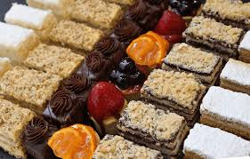
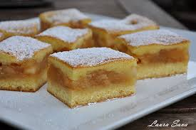
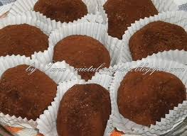

Prăjituri speciale pentru tine!
Publicat:31.10.2025---Timp alocat de citire 6 min
Acest blog vă conferă ultimele noutăți în materie culinară pentru prăjituri ,dar împletește și tradițiile nemuritoare născute în cuptorul bunicii.Acestea fiind spuse, dacă vă plac rețetele de aici vă invităm cu drag să le încercați și voi acasă. De asemenea aici vor apărea 2 dintre cele mai îndrăgite rețete
REȚETELE SĂPTAMÂNII
Prăjitură cu mere perfect scoasă din cuptor
Sună bine nu-i așa.Iată cum se face acest preparat:
Ai nevoie de :
- 50 g unt
- 6 mere
- 80 g zahăr pudră
- 1 lingurita scortisoara
Asta pentru umplutură
- 6 oua
- 180 g faina
- 200 g zahăr
Pentru blat
Si in final 20-30 g zahar pudra pentru decor
DE REȚINUT!Cuptorul trebuie preîncălzit înainte de a începe această operațiune .Temperatura ideală ar fi 180 de grade.
Acum sa înceapă distracția
- Spălăm merele
- Le dăm pe răzătoarea mare
- Punem într-o tigaie untul și lăsăm să se topească
- Adăugăm mărul
- După aceea adăugăm 80 g zahar pudra și lingurița de scorțișoară
- Lăsăm să se rumenească.
- Luăm cele 6 ouă și le separăm.
- Lăsăm compoziția la răcit in timp ce batem cu mixerul (viteză medie) albușurile cu 100g de zahar.
- După ce am format bezeaua (adică albușul nu se "scurge" de pe castron) luam gălbenușurile cu zahărul (restul de 100) și le batem la viteză medie (pentru 5-10 min) până nu se mai simte zahărul la mâna.
- După ce am urmat acești pași, încorporăm cu o spatulă gălbenușurile cu albușurile. Punem mai întâi gălbenușurile in albuș și facem mișcări de jos în sus, fără să apăsăm.
- După ce am incorporat cele două elemente, adăugăm făină,puțin câte puțin,tot așa, încorporând-o cu ajutorul unei spatule cu mișcări fine.
- După ce s-au amestecat, punem jumătate de compoziție in tava tapetata cu hârtie de copt. (Eu am folosit o tava de 30×20) O băgăm în cuptorul preîncălzit la 180° pentru 10-20 minute.
- ATENȚIE!! NU LĂSĂM PRIMA "FOAIE" LA CUPTOR PÂNĂ ESTE GATA DE TOT. TREBUIE SA SE MAI IA PUȚIN DE PE SCOBITOARE.
- După ce am scos-o de la cuptor, adăugăm mărul și întindem frumos cu ajutorul unei spatule.
- Apoi adăugăm și cealaltă jumătate de compoziție.
- Băgăm înapoi la cuptor, verificând-o din când în când.
- După ce am scos-o din cuptor,o putem pudra cu zahăr pudră.

Acum pentru vom prezenta o prajitură mai puțin cunoscută care se poate pregăti și fară coacere, perfectă atât pentru cei mici cât și pentru cei mari.
Pe numele ei simplu avem acum în scenă:
Prajitura CartofIngredientele sunt următoarele
- 400 g biscuiti simpli
- 200 g zahar
- 100 g unt
- 100 g ciocolata cu lapte
- 100 g nuca macinata
- 150 ml apa
- 10 ml cafea
- esenta de rom
Acum modul de preparare e foarte simplu și va dura doar câteva minute așa că e o alegere bună și pentru cei care sunt prea grăbiți ca să-și gătească .
- Se maruntesc biscuitii cu ajutorul unui robot de bucatarie sau intr-o punga cu ajutorul unui sucitor.
- Punem apa cu zaharul intr-o cratita la foc mediu si lasam pana cand se va topi zaharul.
- Se ia compozitia de pe foc si se adauga untul,ciocolata,cafeaua si esenta de rom.
- Se amesteca bine totul.
- Se amesteca biscuitii cu nuca macinata dupa care se adauga compozitia calduta.
- Se amesteca bine si se lasa sa se raceasca la temperatura camerei.
- Portionam cartofii cu o lingura apoi ii vom modela cu mainile ude dupa care tapetam cartofii cu nuca macinata,biscuiti,pesmet,nuca de cocos sau cacao.Eu am ales sa-i tapetez cu cacao si nuca macinata.
- Prajitura Cartof se pune 30 de minute inainte de a fi servita dar daca nu aveti rabdare se poate servi si asa.
Acum mai ramâne doar să o savurați

Vrei să continui și tu acest blog?
Dacă da conectează-te și trimite-ne ideile tale iar noi o să le punem pe această pagină special pentru time .